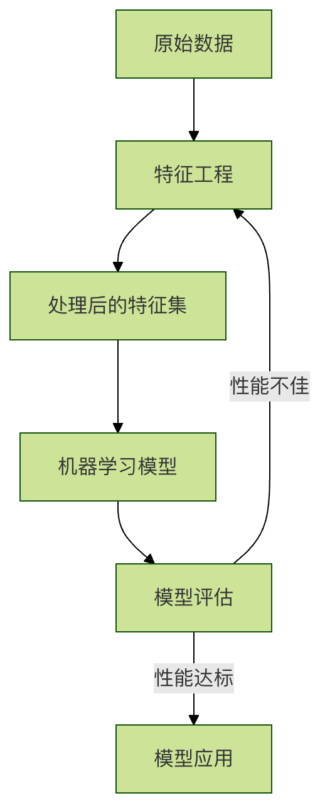

特徴量エンジニアリング
想像してみてください。あなたは料理人で、美味しい料理を作ろうとしています。機械学習モデルはあなたの「調理アルゴリズム」のようなもので、生データは市場で買ってきたさまざまな食材のようなものです。野菜、肉、調味料などがありますが、泥が付いているもの、塊のままのもの、匂いが強いものもあるかもしれません。特徴量エンジニアリングとは、これらの生の「食材」を洗浄し、カットし、下味をつけ、組み合わせて、最終的にそのまま鍋で調理できる「半製品」に加工するプロセスです。これは生データと機械学習モデルを結ぶ橋渡しであり、モデルの性能上限を決める重要なステップです。
簡単に言うと、特徴量エンジニアリングとは、ドメイン知識を活用し、一連の技術的手段を通じて、生データから機械学習モデルにとってより価値が高く、学習しやすい特徴量（変数）を抽出・構築・選択するプロセスです。
一、なぜ特徴量エンジニアリングが重要なのか？
機械学習プロジェクトにおいて、データと特徴量の品質はモデル性能の上限を直接決定し、モデルとアルゴリズムはその上限に近づくだけです。優れた特徴量エンジニアリングには以下の効果があります。
- モデル性能の向上：優れた特徴量は、モデルがデータ内のパターンをより見つけやすくします。
- モデル学習の高速化：無関係または冗長な特徴量を減らすことで、計算の複雑さを低減できます。
- モデルの汎化能力の向上：モデルが学習データ内のノイズに過適合するのを防ぎます。
- モデルの要件への適応：モデルによってデータに対する前提が異なります（例：線形モデルは線形関係を仮定）。特徴量エンジニアリングにより、データをこれらの前提に適合させることができます。
以下のフローチャートを使用すると、機械学習プロセス全体における特徴量エンジニアリングの位置づけを直感的に理解できます。

二、特徴量エンジニアリングの中核となる操作
特徴量エンジニアリングは主に次の3種類の操作を含みます。特徴量処理、特徴量構築和特徴量選択。
1. 特徴量処理
これは最も基本的なステップで、生データを「クリーニング」して、きれいで整った形式にすることを目的とします。
a) 欠損値の処理
データには欠損値がよく存在します（例：NaN, NULL）。適切に処理する必要があります。
| 処理方法 | 説明 | 適用場面 |
|---|---|---|
| 削除 | 欠損値を含む行または列を直接削除する | 欠損データがごく少ない場合、またはその特徴量が重要でない場合 |
| 補完 | 平均値、中央値、最頻値、または特別な値（例：-1）など、何らかの値で埋める | 最も一般的な方法で、さまざまな状況に適用できる |
| 補間 | 時系列または隣接するデータポイントを使って補間計算を行う | 時系列データ |
コード例（Python の pandas ライブラリを使用）：
例
import numpy as np
# 欠損値を含むサンプル DataFrame を作成
data = {'年齢': [25, np.nan, 30, 35, np.nan],
'給与': [50000, 54000, np.nan, 62000, 58000],
'都市': ['北京', '上海', '広州', np.nan, '北京']}
df = pd.DataFrame(data)
print("元データ：")
print(df)
# 1. 欠損値の削除（NaN を含む行を削除）
df_dropped = df.dropna()
print("\n欠損値削除後：")
print(df_dropped)
# 2. 欠損値の補完
# 数値列は平均値で補完
df_filled = df.copy()
df_filled['年齢'].fillna(df_filled['年齢'].mean(), inplace=True)
df_filled['給与'].fillna(df_filled['給与'].mean(), inplace=True)
# カテゴリ列は最頻値で補完
df_filled['都市'].fillna(df_filled['都市'].mode()[0], inplace=True)
print("\n欠損値補完後：")
print(df_filled)
b) 外れ値の処理
外れ値は、大部分のデータと明らかに異なる値であり、モデルに悪影響を与える可能性があります。一般的な検出方法は次のとおりです。
- 標準偏差法：平均 ± 3倍の標準偏差の範囲を超える値を外れ値とみなします。
- 箱ひげ図法：次の値より小さいか、
Q1 - 1.5*IQRまたは次の値より大きいQ3 + 1.5*IQR値は外れ値です（IQR = Q3 - Q1）。
処理方法としては、削除、境界値への置き換え、欠損値として扱う、などがあります。
c) データの標準化/正規化
多くのモデル（SVM、KNN、ニューラルネットワークなど）は特徴量のスケールに敏感です。異なるスケールの特徴量を同じスケールに変換する必要があります。
| 方法 | 式 | 説明 | 適用場面 |
|---|---|---|---|
| 標準化 | (x - 均值) / 标准差 |
処理後、データの平均は0、標準偏差は1になる | データ分布が正規分布に近い場合 |
| 正規化 | (x - min) / (max - min) |
データを [0, 1] の範囲にスケーリングする | データの境界が明確で、高速な計算が必要な場合 |
コード例（scikit-learn ライブラリを使用）：
例
import numpy as np
# サンプルデータ
data = np.array([[1000, 25],
[1500, 30],
[800, 20],
[1200, 28]])
# 標準化
scaler_standard = StandardScaler()
data_standardized = scaler_standard.fit_transform(data)
print("標準化後のデータ（平均≈0、標準偏差≈1）：")
print(data_standardized)
print(f"平均： {data_standardized.mean(axis=0)}")
print(f"標準偏差： {data_standardized.std(axis=0)}")
# 正規化
scaler_minmax = MinMaxScaler()
data_normalized = scaler_minmax.fit_transform(data)
print("\n正規化後のデータ（範囲 [0,1]）：")
print(data_normalized)
2. 特徴量構築
既存の特徴量を組み合わせたり変換したりして、より予測力の高い新しい特徴量を作り出します。
a) 数値特徴量の変換
- 多項式特徴量：特徴量の2乗、3乗などを作成し、線形モデルが非線形関係を学習するのを助けます。
- ビニング（離散化）：連続的な年齢を「青年」「中年」「老年」などの区間に分け、連続データを離散化します。
- 数学的変換：対数、指数などの変換を使用してデータ分布を変えます。
b) カテゴリ特徴量のエンコーディング
機械学習モデルは「北京」「上海」のようなテキストを直接処理できません。これらを数値に変換する必要があります。
| 方法 | 説明 | 特徴 |
|---|---|---|
| ラベルエンコーディング | 各カテゴリに一意の整数を割り当てます。例：北京:0， 上海:1 |
シンプルですが、誤った順序関係を導入する可能性があります（モデルが 1>0 と見なす可能性がある）。 |
| ワンホットエンコーディング | 各カテゴリに対して新しいバイナリ特徴量（0または1）を作成する | 順序の誤解を排除できますが、カテゴリが多いと特徴量の次元爆発を引き起こす可能性があります。 |
コード例：
例
from sklearn.preprocessing import LabelEncoder, OneHotEncoder
# サンプルデータ
df_cat = pd.DataFrame({'都市': ['北京', '上海', '広州', '北京', '深セン']})
# ラベルエンコーディング
le = LabelEncoder()
df_cat['都市_ラベルエンコード'] = le.fit_transform(df_cat['都市'])
print("ラベルエンコーディング結果：")
print(df_cat)
# ワンホットエンコーディング
# 方法1: pandas の get_dummies を使用
df_onehot_pd = pd.get_dummies(df_cat['都市'], prefix='都市')
print("\npandas を使用したワンホットエンコーディング：")
print(df_onehot_pd)
# 方法2: sklearn の OneHotEncoder を使用（パイプラインでより一般的）
ohe = OneHotEncoder(sparse_output=False) # sparse_output=False は疎行列ではなく配列を返す
encoded_array = ohe.fit_transform(df_cat[['都市']]) # 入力が2次元であることに注意
print("\nsklearn によるワンホットエンコーディング（配列形式）：")
print(encoded_array)
print("新しい特徴量名：", ohe.get_feature_names_out())
3. 特徴量選択
すべての特徴量から最も重要なサブセットを選び出し、次元を減らして過適合のリスクを低減します。
| 方法 | 説明 |
|---|---|
| フィルター法 | 特徴量と目的変数の統計的関連性（分散、カイ二乗検定、相互情報量など）に基づいて順位付けして選別します。特定のモデルに依存しません。 |
| ラッパー法 | 特徴量選択を探索問題とみなし、モデル性能を評価基準として使用します（例：再帰的特徴量除去 RFE）。効果は高いですが、計算コストが高くなります。 |
| 埋め込み法 | モデル学習の過程で自動的に特徴量選択を行います（例：L1 正則化 LASSO 回帰、ツリーモデルの特徴量重要度）。 |
コード例（特徴量重要度に基づく選択）：
例
from sklearn.ensemble import RandomForestClassifier
import pandas as pd
import matplotlib.pyplot as plt
# データセットを読み込む
data = load_breast_cancer()
X = pd.DataFrame(data.data, columns=data.feature_names)
y = data.target
# ランダムフォレストモデルを学習し、特徴量重要度を計算します。
model = RandomForestClassifier(n_estimators=100, random_state=42)
model.fit(X, y)
# 特徴量重要度の取得
importances = model.feature_importances_
feature_importance_df = pd.DataFrame({
'特徴': data.feature_names,
'重要度': importances
}).sort_values('重要度', ascending=False)
print("特徴量重要度ランキング：")
print(feature_importance_df.head(10)) # 最も重要な10個の特徴を表示
# 可視化
plt.figure(figsize=(10, 6))
plt.barh(feature_importance_df['特徴'][:10], feature_importance_df['重要度'][:10])
plt.xlabel('特徴量重要度')
plt.title('Top 10 特徴量重要度')
plt.gca().invert_yaxis() # 最も重要なものを上部に表示
plt.show()
# 重要度が0.03より大きい特徴を選択すると仮定
selected_features = feature_importance_df[feature_importance_df['重要度'] > 0.03]['特徴'].tolist()
print(f"\n選択された特徴： {selected_features}")
三、実践演習：簡単なデータセットを実際に処理する
タスク：有名なタイタニック号の乗客データセットに対して基本的な特徴量エンジニアリングを行い、乗客が生き残るかどうかを予測するための準備をする。
手順のヒント：
- データを読み込む（使用できるのは
seabornライブラリのload_dataset('titanic')）。 - データの観察：特徴量の型、欠損値の状況を確認する。
- 特徴量処理：
- 欠損値の処理（例えば中央値で補完する
age、最頻値で補完するembarked）。 - 将
sex（性別）特徴に対してラベルエンコーディング或ワンホットエンコーディング。 - 对
age（年齢）に対してビニング、新しい年齢層の特徴量を作成する。
- 欠損値の処理（例えば中央値で補完する
- 特徴量の構築：
- 組み合わせて
sibsp（兄弟姉妹/配偶者の数）とparch（親/子供の数）を組み合わせ、新しいfamily_size（家族規模）特徴を作成する。
- 組み合わせて
- 特徴量選択：
- 明らかに無関係な特徴を削除する（例えば
passenger_id,name,ticket）。 - 数値特徴量と生存目標の相関を計算してみて、特徴量を選定する。
- 明らかに無関係な特徴を削除する（例えば
この演習を通じて、生データがどのように段階的な特徴量エンジニアリングによって機械学習モデルにとってより「友好的」になるかを実感できるでしょう。
まとめ
特徴量エンジニアリングは機械学習において、芸術（ドメイン知識、経験、直感）と科学（統計的手法、アルゴリズム）を組み合わせた技術です。それは決まった規則がなく、具体的なデータや問題、モデルに応じて繰り返し試行錯誤し、反復する必要があります。初心者にとっては、本記事で紹介した基本的な方法を身につけて、よく練習すれば、効果的な機械学習モデルを構築するための最も強固な基盤を築いたことになります。覚えておいてください。優れたモデルは、しばしば優れた特徴量に由来します。。
その他の拡張
クリックしてノートを共有
<p style="font-size:14px;">ノートは本記事の内容を拡張したものである必要があります！</p><br> <p style="font-size:12px;"><a href="../tougao.html" target="_blank">記事投稿はこちらをクリック</a></p> <p style="font-size:14px;"><a href="../w3cnote/runoob-user-test-intro.html" target="_blank">登録招待コードの取得方法</a></p> <h3 class="text-muted"><i class="fa fa-info-circle" aria-hidden="true"></i> ノートを共有する前に必ず<a href=";.html" class="runoob-pop">ログイン</a>！</h3> <p><a href="../w3cnote/runoob-user-test-intro.html" target="_blank">登録招待コードの取得方法</a></p>